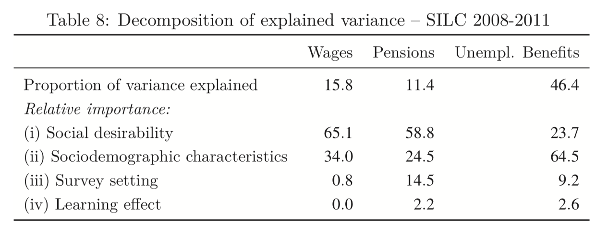
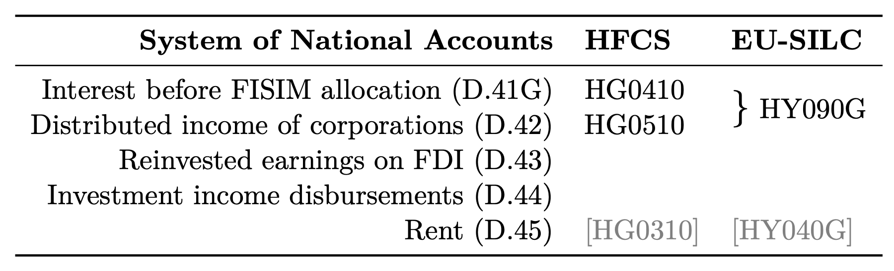
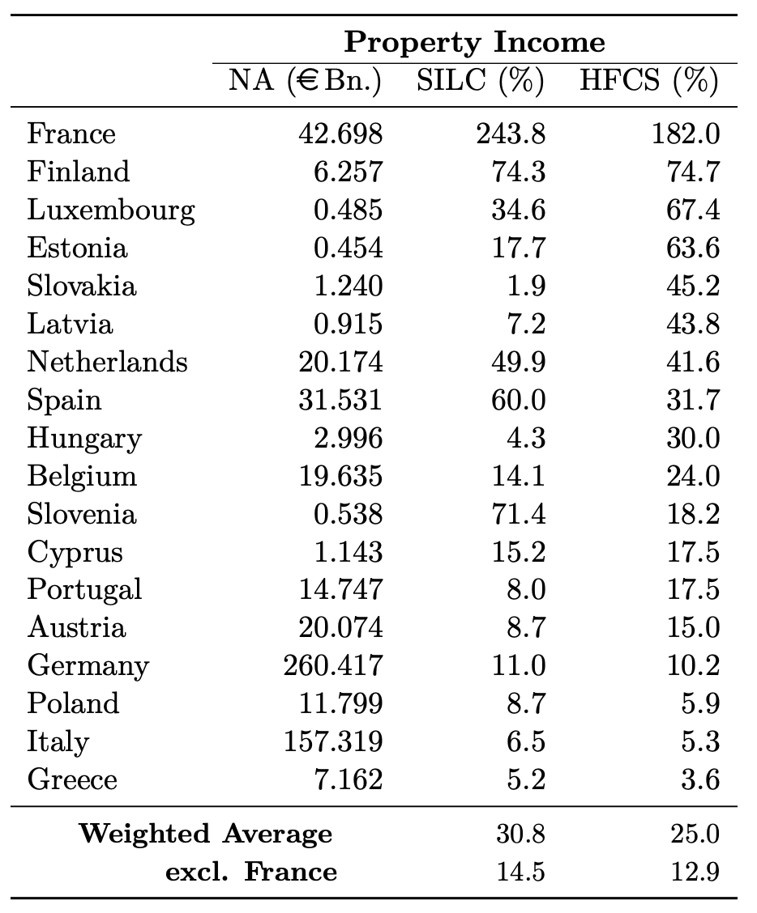
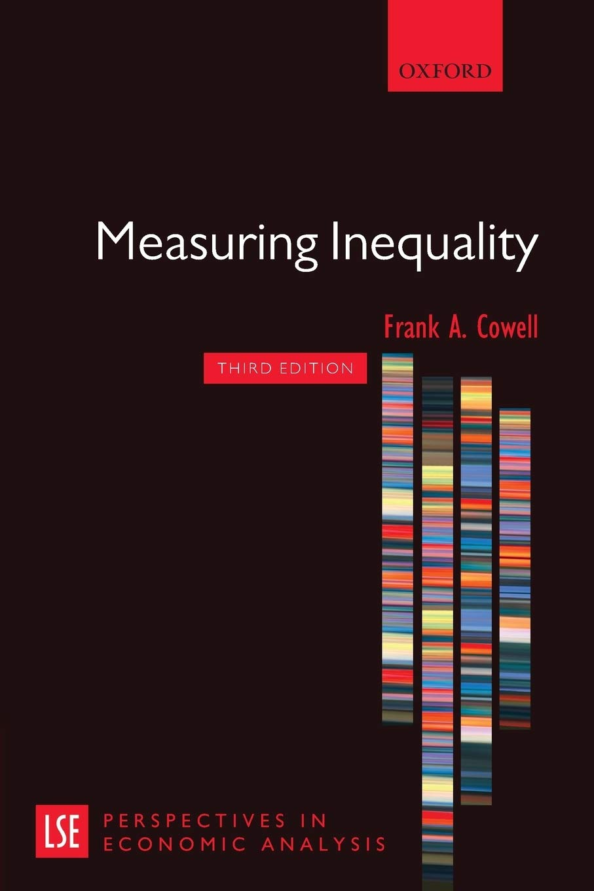
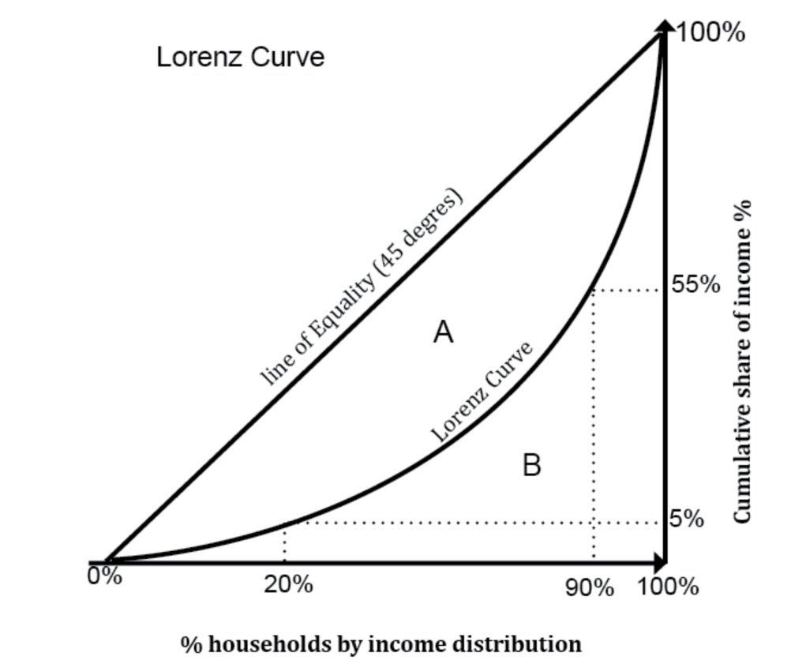
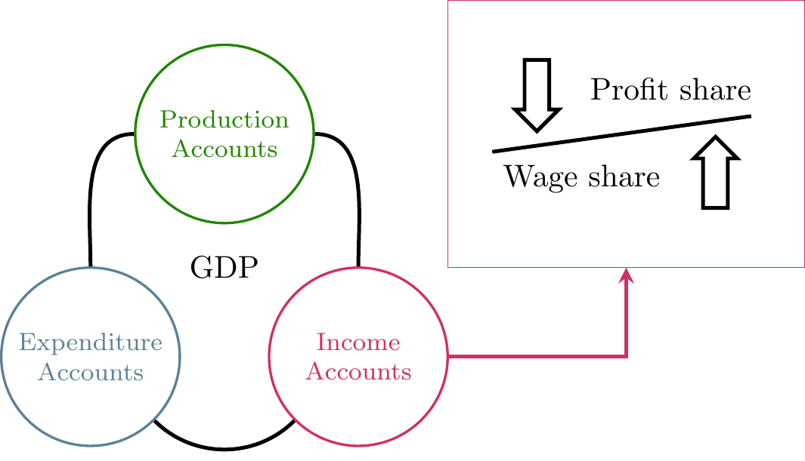

The economics of inequality
Data sources and definitions
Dr. Matthias Schnetzer
October 21, 2022
Has inequality been rising lately?
What inequality do you mean exactly?

Illustrations by https://openpeeps.com.
How is income defined and how do we measure it?
Income concepts according to Canberra Group
| ID | Concept | Aggregate |
|---|---|---|
| 1 | Income from employment | 1a + 1b |
| 1a | Employee income | |
| 1b | Income from self-employment | |
| 2 | Property income | |
| 3 | Income from household production | |
| 4 | Current transfers received | |
| 5 | Income from production | 1 + 3 |
| 6 | Primary income | 1 + 2 + 3 |
| 7 | Current transfers paid (taxes, fees, etc.) | |
| 8 | Disposable income | 6 + 4 - 7 |
System of National Accounts (SNA)
| ID | Concept |
|---|---|
| D.1 | Compensation of employees |
| D.11 | Wages and salaries |
| D.12 | Employers social contributions |
| B.2G | Operating surplus, gross |
| B.3G | Mixed income, gross |
| D.4 | Property income |
| D.41 | Interest |
| D.42 | Distributed income of corporations |
| D.43 | Reinvested earnings on foreign direct investment |
| D.44 | Investment income disbursements (e.g. insurances) |
| D.45 | Rent |
Austrian tax law
| ID | Concept | Description |
|---|---|---|
| 1 | Income from agriculture and forestry | Farmers, forest managers |
| 2 | Income from self-employment | E.g. Freelancers, Architects, Lawyer, Doctors, Consultants, CEO if she holds > 25% |
| 3 | Business income | All other self-employed activities |
| 4 | Employee income | Employees, retirees |
| 5 | Renting and lease of land | Particularly renting of real estate properties |
| 6 | Property income | Savings accounts, dividends (final taxation with capital income tax) |
| 7 | Other income | Income from speculation, income from selling private property, etc. |
Income data sources in Austria
| Income Type | Aggregate time series | Long-term distribution | Short-term distribution |
|---|---|---|---|
| Employee income | WTD SSD | WTD SSD | WTD SSD SES EU-SILC HFCS |
| Self-employed | ITD (IWITD) | ITD (IWITD) EU-SILC HFCS | |
| Property income | CGT (ITD) | EU-SILC HFCS | |
| Transfers | Various admin. sources | EU-SILC HFCS | |
| Disposable household income | SNA | HBS EU-SILC HFCS |
Administrative and survey data sources: Wage tax data (WTD), Income tax data (ITD), Integrated wage and income tax data (IWITD), Social security data (SSD), Capital gains tax data (CGT), System of National Accounts (SNA), European Survey of Income and Living Conditions (EU-SILC), Household Finance and Consumption Survey (HFCS), Household Budgetary Survey (HBS), Structure of Earnings Survey (SES)
What is EU-SILC?
- European Union Statistics on Income and Living Conditions (by Eurostat)
- Harmonized sample survey in private households
- Replaced European Community Household Panel (1994-2001) in 2003
- Conducted in all EU member states and Switzerland, Norway, Iceland, Turkey, Serbia and Macedonia
- Sample:
- 🇦🇹 Stratified random sample from population register with approx. 6,000 households annually
- 🇪🇺 approx. 135,000 households (use weights!)
- Interview mode: CAPI/CATI
- Rotating 4 year panel; Ad-hoc modules
- Standard documentation for Austria:
Income data in EU-SILC
Individual level:
- employee cash or near cash income
- cash benefits or losses from self-employment
- pension from individual private plans
- unemployment benefits
- old-age benefits
- survivor benefits
- sickness benefits
- disability benefits
- education-related allowances
Household level:
- income from rental of a property or land
- family/children related allowances
- social exclusion not elsewhere classified
- housing allowances
- regular inter-household cash transfers received
- alimonies received
- interest, dividends, profit from capital investments in incorporated business
- income received by people aged under 16
Do income data from various sources fit together?

Administrative versus survey data

Impact on response behavior:
- Social desirability
- Sociodemographic characteristics
- Survey design
- Learning effect
Mean reverting errors

How do we explain the mismatch?

What about capital income?


How do you measure personal income inequality?
Common properties of inequality measures

- Anonymity principle: it does not matter who earns the income
- Population principle: the absolute population size does not matter, only proportions do
- Relative income (or scale) principle: Relative incomes matter, not the absolute levels
- Dalton (or transfer) principle: A regressive transfer within the distribution increases inequality
Lorenz curve and Gini coefficient

Gini coefficient: \[\frac{A}{(A+B)} \in (0, 1)\]
Alternative: Half of the relative mean absolute difference \[G= \frac{\sum_{i=1}^{n}\sum_{j=1}^{n}|y_i - y_j|}{2n^2\bar{y}}\]
Alternative inequality measures
- Shares
- Ratios (point or share ratios, e.g. Palma ratio)
- General Entropy (GE) measures:
- Decomposable
- Determine distance parameter \(\alpha\) (lower values put more weight on changes in lower tail; higher values at the top;)
- \(\alpha = 0\): Theil‘s L (mean log deviation)
- \(\alpha = 1\): Theil‘s T: \(\frac{1}{N} \sum_{i=1}^{N}\frac{y_i}{\bar{y}} ln\left(\frac{y_i}{\bar{y}}\right) \in (0; ln(N))\)
- \(\alpha = 2\): Half the squared Coefficient of Variation (ratio of std. deviation to mean)
Income distribution in the National Accounts

National Accounts
Institutional sectors in the SNA
| Ownership | (S.11) Non-financial corporations |
(S.12) Financial corporations |
(S.13) General government |
(S.14) Households |
(S.15) NPIs serving households |
|---|---|---|---|---|---|
| Public sector | Public non-financial corporations | Public financial corporations | All government units and government NPIs | ||
| National private sector | National private non-financial corporations | National private financial corporations | All households | All NPIs serving households | |
| Foreign-controlled sector | Foreign-controlled non-financial corporations | Foreign-controlled financial corporations |
Note: The sectors presented in this table are domestic sectors (S.1). S.2 accounts for the rest of the world (RoW).
Income accounts in the SNA
| Income accounts | |
|---|---|
| Gross domestic product (GDP) at market prices (I) | |
| - Consumption of fixed capital | |
| = Net domestic product | |
| (I) | |
| + Primary incomes receivable from the rest of world | Rest of world |
| - Primary incomes payable to the rest of world | Rest of world |
| = Gross national income (GNI) at market prices | |
| - Consumption of fixed capital | Depreciation |
| = Net national income at market prices | |
| - Taxes on products | Government |
| + Subsidies on products | Government |
| = Net national income at factor cost | Production factors |
Data for Austria (in billion Euro)
Wage share = Compensation of Employees / Net national income at factor cost
Bibliography
PI 2159 Special Topics in Economic Policy | Winter term 2022/23